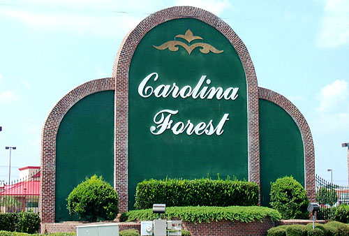

Welcome to the home page of Haley's Food Fusion restaurant. On this page, you will find all of our menus that have breakfast, lunch, dinner, and appetizers. You can also read more about us and see our two locations, with our original location in Carolina Forest in Myrtle Beach, SC.
We first started out with the idea of combining a variety of foods into one location. Not only do we feel we successfully do that, but being located in Myrtle Beach offers a family friendly atmosphere with other attractions for you and your friends or family to enjoy.
See other attractions for you and your family to enjoy in Myrtle Beach by clicking here.
Like previously stated, we pride ourselves on being able to offer a wide variety of foods to customers for them to enjoy. We offer multiple breakfast, lunch, and dinner items. We offer Japanese, Mexican, seafood, and even typical American dishes to our customers.
We are most proud of our famous buffalo chicken dip. Our buffalo chicken dip is one of our top selling foods and is what we are famous for. Customers rave about its delicious flavor.
Check out customer's thoughts and reviews on our buffalo chicken dip by clicking here.
As much as the atmosphere is great for our customers, we believe in a healthy, happy staff as well! We currently are offering positions for members to join our staff as servers or hostesses.
If you go to the footer, you can see the link that leads to job expectations for the current positions being offered. If you cannot decide between applying to become a server or hostess, click the link below to see the key differences between the two! Either way, we promote a healthy work environment atmosphere and are always looking to welcome new members.
See some of the differences between serving and hostessing by clicking here.
For the Bootstrap feature of my choose that I was able to add, I chose to change the "more details" ingredients sections to use the Bootstrap Collapsible feature. I felt this looked more smooth than the original "detail" property feature that was previously being used. In addition, I also centered all of the food images using the "center-block" class attribute and changed the font design of the allergy warning ingredients to have the "text-danger" class attribute so they would appear in red.
For the color I used an analogous color scheme. The three colors I chose to work with were #de5c4b, #de814b, #de4b72. These three colors sat adjacent to each other on the color wheel. I feel the three colors I chose compliment each other very well, but also are fun and inviting for users viewing the website. I feel these colors give off a welcoming vibe to customers and make the website look fun and exciting. I just to use the analogous color scheme because I felt many of the other color schemes appeared to be too all over the place. When I tried some of the other color schemes, the website looked very distracting with all of the contrasting colors and the focus appeared to be all over the place. I feel the color scheme I chose with the colors I used appears both inviting and exciting.